films1
films1Filme
Fünfzehn Actionfilme für einen guten Abend
Fünfzehn Actionfilme für einen guten Abend, ausgewählt mit IMDb-Bewertungen ab 7,0/10.
Veröffentlicht: 2026-09-07 · IMDb 7.0+Artikel lesenSwiftChannels Blog
films1Fünfzehn Actionfilme für einen guten Abend, ausgewählt mit IMDb-Bewertungen ab 7,0/10.
Veröffentlicht: 2026-09-07 · IMDb 7.0+Artikel lesen films2
films2Thriller, die immer noch funktionieren, ausgewählt mit IMDb-Bewertungen ab 7,0/10.
Veröffentlicht: 2026-09-09 · IMDb 7.0+Artikel lesen films3
films3Kriminalfilme für einen Abend am Stück, ausgewählt mit IMDb-Bewertungen ab 7,0/10.
Veröffentlicht: 2026-09-11 · IMDb 7.0+Artikel lesen films4
films4Science-Fiction, die gut gealtert ist, ausgewählt mit IMDb-Bewertungen ab 7,0/10.
Veröffentlicht: 2026-09-14 · IMDb 7.0+Artikel lesen films5
films5Komödien, die wirklich landen, ausgewählt mit IMDb-Bewertungen ab 7,0/10.
Veröffentlicht: 2026-09-16 · IMDb 7.0+Artikel lesen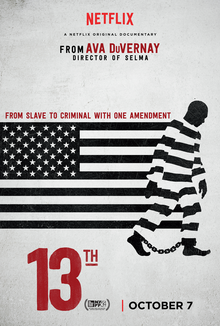
films6Dokumentationen, die den Blick verändern, ausgewählt mit IMDb-Bewertungen ab 7,0/10.
Veröffentlicht: 2026-09-18 · IMDb 7.0+Artikel lesenFilme für einen Familienabend zu Hause, ausgewählt mit IMDb-Bewertungen ab 7,0/10.
Veröffentlicht: 2026-09-21 · IMDb 7.0+Artikel lesen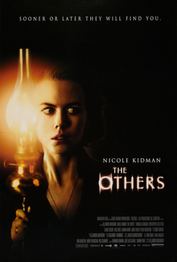
films8Horror, der auf Spannung statt Blut setzt, ausgewählt mit IMDb-Bewertungen ab 7,0/10.
Veröffentlicht: 2026-09-23 · IMDb 7.0+Artikel lesen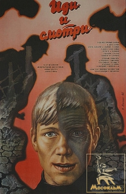
films9Kriegsfilme ohne Klischees, ausgewählt mit IMDb-Bewertungen ab 7,0/10.
Veröffentlicht: 2026-09-25 · IMDb 7.0+Artikel lesen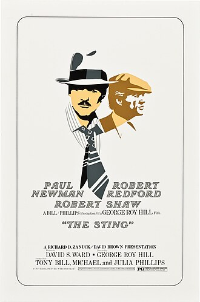
films10Heist-Filme nach Cleverness des Plans, ausgewählt mit IMDb-Bewertungen ab 7,0/10.
Veröffentlicht: 2026-09-28 · IMDb 7.0+Artikel lesen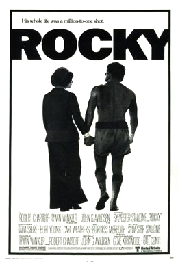
films11Sportfilme, die auch ohne Sportwissen funktionieren, ausgewählt mit IMDb-Bewertungen ab 7,0/10.
Veröffentlicht: 2026-09-30 · IMDb 7.0+Artikel lesen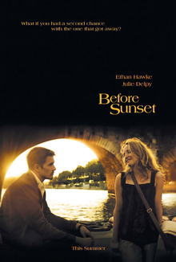
films12Filme unter 100 Minuten für einen kurzen Abend, ausgewählt mit IMDb-Bewertungen ab 7,0/10.
Veröffentlicht: 2026-10-02 · IMDb 7.0+Artikel lesen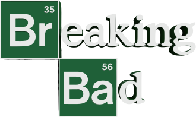
series13Serien, wenn du schon alles gesehen hast, ausgewählt mit IMDb-Bewertungen ab 7,0/10.
Veröffentlicht: 2026-10-05 · IMDb 7.0+Artikel lesen series14
series14Miniserien für ein Wochenende, ausgewählt mit IMDb-Bewertungen ab 7,0/10.
Veröffentlicht: 2026-10-07 · IMDb 7.0+Artikel lesenDie besten Krimiserien nach Ländern, ausgewählt mit IMDb-Bewertungen ab 7,0/10.
Veröffentlicht: 2026-10-09 · IMDb 7.0+Artikel lesenSerien, die Untertitel wert sind, ausgewählt mit IMDb-Bewertungen ab 7,0/10.
Veröffentlicht: 2026-10-12 · IMDb 7.0+Artikel lesen series17
series17Lange Serien, die den Einsatz belohnen, ausgewählt mit IMDb-Bewertungen ab 7,0/10.
Veröffentlicht: 2026-10-14 · IMDb 7.0+Artikel lesen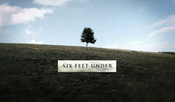
series18Serien mit wirklich guter letzter Staffel, ausgewählt mit IMDb-Bewertungen ab 7,0/10.
Veröffentlicht: 2026-10-16 · IMDb 7.0+Artikel lesen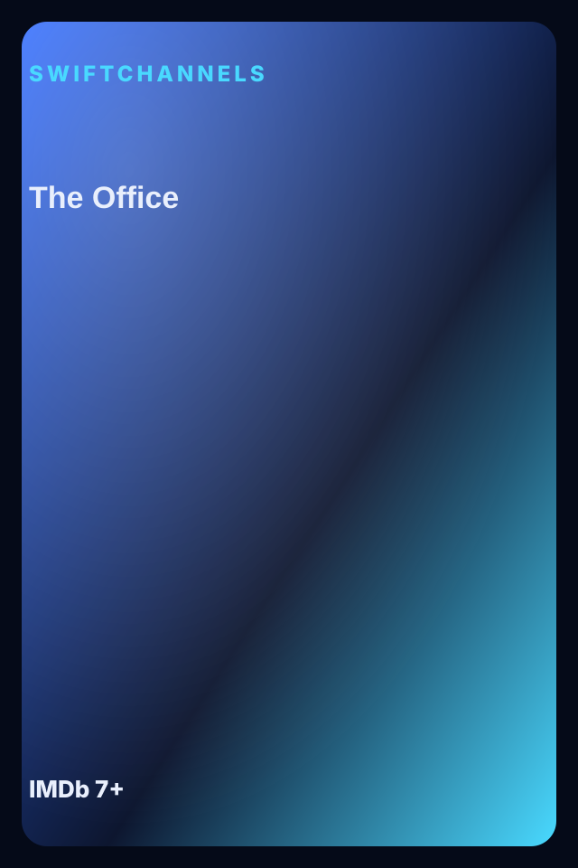
series19Comedyserien, die beim Wiedersehen halten, ausgewählt mit IMDb-Bewertungen ab 7,0/10.
Veröffentlicht: 2026-10-19 · IMDb 7.0+Artikel lesen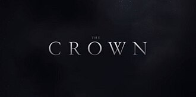
series20Historische Dramen mit Gefühl für die Zeit, ausgewählt mit IMDb-Bewertungen ab 7,0/10.
Veröffentlicht: 2026-10-21 · IMDb 7.0+Artikel lesenSerien für die ganze Familie, ausgewählt mit IMDb-Bewertungen ab 7,0/10.
Veröffentlicht: 2026-10-23 · IMDb 7.0+Artikel lesenWenn du Heist-Filme magst, schau diese, ausgewählt mit IMDb-Bewertungen ab 7,0/10.
Veröffentlicht: 2026-10-26 · IMDb 7.0+Artikel lesen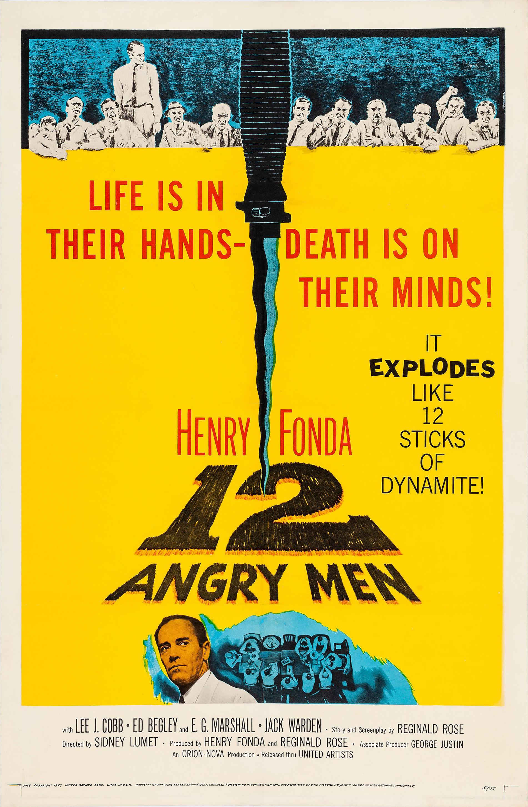
liked23Wenn du Gerichtsdramen magst, schau diese, ausgewählt mit IMDb-Bewertungen ab 7,0/10.
Veröffentlicht: 2026-10-28 · IMDb 7.0+Artikel lesen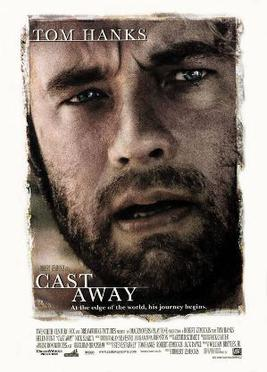
liked24Wenn du Überlebensgeschichten magst, schau diese, ausgewählt mit IMDb-Bewertungen ab 7,0/10.
Veröffentlicht: 2026-10-30 · IMDb 7.0+Artikel lesenWenn du langsame Mystery-Geschichten magst, schau diese, ausgewählt mit IMDb-Bewertungen ab 7,0/10.
Veröffentlicht: 2026-11-02 · IMDb 7.0+Artikel lesen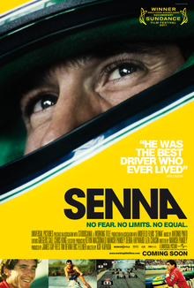
liked26Wenn du Sportdokus magst, schau diese, ausgewählt mit IMDb-Bewertungen ab 7,0/10.
Veröffentlicht: 2026-11-04 · IMDb 7.0+Artikel lesen liked27
liked27Wenn du Spionagethriller magst, schau diese, ausgewählt mit IMDb-Bewertungen ab 7,0/10.
Veröffentlicht: 2026-11-06 · IMDb 7.0+Artikel lesen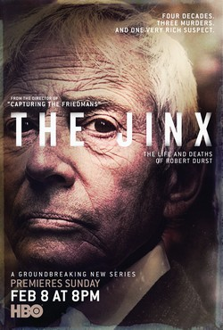
liked28Wenn du True Crime magst, schau diese, ausgewählt mit IMDb-Bewertungen ab 7,0/10.
Veröffentlicht: 2026-11-09 · IMDb 7.0+Artikel lesen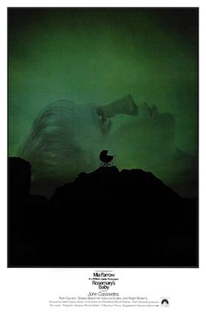
liked29Wenn du psychologischen Horror magst, schau diese, ausgewählt mit IMDb-Bewertungen ab 7,0/10.
Veröffentlicht: 2026-11-11 · IMDb 7.0+Artikel lesen liked30
liked30Wenn du Roadmovies magst, schau diese, ausgewählt mit IMDb-Bewertungen ab 7,0/10.
Veröffentlicht: 2026-11-13 · IMDb 7.0+Artikel lesen